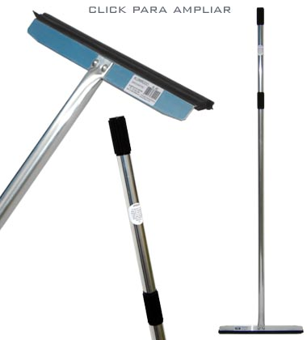

|  | O
alumirodo profissional foi desenvolvido por engenheiros de segurança do trabalho, visando preservar o bem estar do
usuário que manuseia constantemente o produto, como acontece
em hospitais, frigoríficos, indústrias, etc. possui
como grande diferencial um cabo mais longo, de 1,5m. É fabricado
em liga leve e resistente a produtos de limpeza, mesmo contendo hipoclorito
(antes de ser introduzido no mercado, este produto foi testado por
longos períodos em contato direto com hipoclorito de sódio,
não apresentando corrosão alguma). Por ser composto
em alumínio e borracha natural, pode ser esterilizado em autoclave,
o que o torna ideal para trabalhos onde necessita de cuidados com
higiene. Graças a um excelente projeto, o Alumirodo Profissional é um
produto extremamente leve, ao mesmo que muito resistente e durável.
Permite a fácil substituição da borracha, caracterizando-o
assim como o melhor custo benefício do mercado de utensílios
de secagem. |